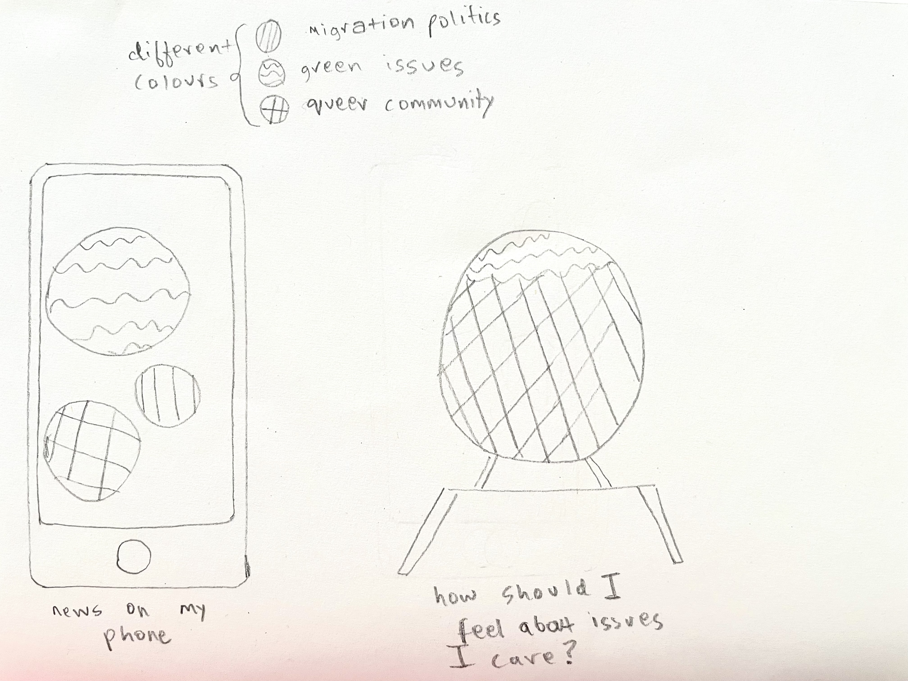

Question: Colour is used for camouflaging by many animals, to show off to potential mates by birds, and to express themselves. But most microbes cannot see, and those that can are pretty bad at it. So then what is the purpose of colour in the microscopic world? Does it have no purpose at all, it’s just a side effect of a functionality?
As molecular oxygen is essential for pigmentation, only aerobic bacteria is pigmented. Pigment synthesis is dependent on light, pH and temperature. Pigment formation is associated with morphological characteristics, cellular activities, protection and survival. For example, autotrophic microbes are green because of the chlorophyll they use in photosynthesis to create their food; other microbes are yellow, orange, or red, due to the carotenoids they use to protect against environmental stresses. Bacteria and archaea that produce these pigments are present in environments of high salinity, high UV radiation, and extreme temperatures. Bacteria like Haematococcus and Euglena sanguinea are normally green due to their chlorophyll but turn red by producing astaxanthin, a carotenoid, in excess UV light.Pigmented bacteria has also been used as biosensors to detect environmental pollution like oil spills.
Cyanobacteria is also known as blue-green algae though, and what is less well known is the origins of the ‘blue’ part of that name. This comes from a cyan pigment in these bacteria called phycocyanin, not to be confused with the killer pyocyanin discussed earlier, which is an accessory pigment that helps boost photosynthesis by absorbing more wavelengths. This means that the cyanobacteria can survive and even thrive in environments where the water above them has already absorbed or diverted most of the red and blue wavelengths that chlorophyll uses, thereby maximizing the survivability of cyanobacteria, and everything above them in the micro- and macroscopic food chain. Billions of years ago, these organisms caused the Great Oxidation Event, a mass extinction that led to the world as we know it now. The importance of the green and blue photosynthetic pigments is incredible. It is the reason we exist.
The non-stop 24x7 alerts make us feel like we need to constantly have opinions on matters that are happening around the globe. It has become more of a pressure rather than the sheer need to know. What if my device would give an overall response with what's happening around the world by aligning with my personal beliefs and give me a guesswork of how I should be feeling about the world as of today.

During my research, I read that few bacteria like Haematococcus and Euglena sanguinea are normally green (due to chlorophyll presence) but turn red by producing astaxanthin, a carotenoid, in excess UV light. I find it interesting the change in colour can be read as a danger zone signifying threat. The similar feeling is aroused when when I read tweets like "COP26 will end in failure soon", "Texas passes law banning abortion"- feeling stuck and unsafe. The data (for our experiment can be tweet counts and hashtags) from my device and is then reflected as colours near my table lamp indicating the status of the world I'm living in. The Haematococcus bacteria is green when things seem ok around the world but when things fire up and get ugly, the bacteria can be treated in excess uv light causing it to change its colour to red signifying danger pushing the human to act up on it. I find it interesting because in a way this designed bacteria can bridge the perception gap of what's happening around the world and the missing element of physicality in our everyday life.